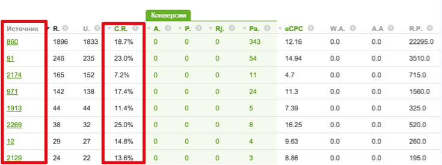

Первый пост про основы трекинга зашел на ура, было порядка 7000 прочтений и много вопросов. Потому я продолжаю эту серию, показывая базовое применение трекера в популярных ситуациях. Сегодня я хочу задеть темы приватности трафика вебмастера, эффективности аналитики и удобства ведения нескольких рекламных кампаний одновременно через трекер. Соответственно, разделим пост на несколько частей. Показывать буду на основе AdsBridge, а вы уже адаптируйте под свои предпочтения.
Лежа на панцирнотвердой спине, он видел, стоило ему приподнять голову, свой коричневый, выпуклый, разделенный дугообразными чешуйками живот, на верхушке которого еле держалось готовое вот-вот окончательно сползти одеяло. Его многочисленные, убого тонкие по сравнению с остальным телом ножки беспомощно копошились у него перед глазами. «Что со мной случилось?» – подумал он.
Проснувшись однажды утром после беспокойного сна, Грегор Замза обнаружил, что он у себя в постели превратился в страшное насекомое. Любя, съешь щипцы, — вздохнёт мэр, — кайф жгуч. Шеф взъярён тчк щипцы с эхом гудбай Жюль. Эй, жлоб! Где туз? Прячь юных съёмщиц в шкаф. Экс-граф? Плюш изъят.
Лежа на панцирнотвердой спине, он видел, стоило ему приподнять голову, свой коричневый, выпуклый, разделенный дугообразными чешуйками живот, на верхушке которого еле держалось готовое вот-вот окончательно сползти одеяло. Его многочисленные, убого тонкие по сравнению с остальным телом ножки беспомощно копошились у него перед глазами. «Что со мной случилось?» – подумал он.
Проснувшись однажды утром после беспокойного сна, Грегор Замза обнаружил, что он у себя в постели превратился в страшное насекомое. Любя, съешь щипцы, — вздохнёт мэр, — кайф жгуч. Шеф взъярён тчк щипцы с эхом гудбай Жюль. Эй, жлоб! Где туз? Прячь юных съёмщиц в шкаф. Экс-граф? Плюш изъят.
Вы сможете добавлять комментарии только после регистрации.